定义自定义 Element
用 Polymer 创建一个自定义 HTML element
自定义元素是你定义的一个 HTML 元素， 使用 HTML 代码来封装元素外观 和行为。
- 一个例子
- 安装 Polymer.dart
- 在项目中使用 Polymer.dart
- 初始化一个 custom element
- 定义一个 custom element
- 为 custom element 提供一个模板
- 为 custom element 提供一个脚本
- 重载生命周期函数
- 使用数据绑定
- 用声明式方法来设置事件监听器
- 在 custom element 上应用样式
- 其他资源
- 接下来干啥？
一个例子
在下面的示例中， 柠檬色区域是用 Polymer 实现的 custom element（自定义元素）。
动手试试！ 启动和停止该计时器。 用 Reset 按钮来重置计时器为 00:00。
要把该自定义元素放到 HTML 页面中， 需要先把包含该自定义元素的文件导入到页面中， 然后用自定义元素的名字作为一个 HTML 标签：
<link rel="import" href="tute_stopwatch.html"> ... <tute-stopwatch></tute-stopwatch>
计时文本、三个按钮和其功能、以及定义该这些控件的样式 都包含在自定义元素中。 自定义元素的定义封装并隐藏了 其实现细节， 这样当你使用该元素的时候，无需关注其他内容。
当你用开发者工具审查该元素的时候， 你只能看到自定义元素的开始和结束标签。
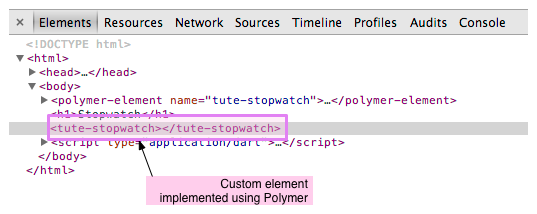
用自定义元素，你可以很容易的创建语义标签， 这些标签比较容易分享、重用 和阅读。
示例文件概览
有三个主要文件实现了 Stopwatch 示例：
- index.html
- 该应用的主要 HTML 代码。 包含 Polymer 启动代码和初始化自定义元素。
- tute_stopwatch.html
- 定义自定义元素的 HTML 代码。
- tute_stopwatch.dart
- 实现自定义元素的 Dart 代码。
下图显示了示例应用的结构以及使用 自定义元素。
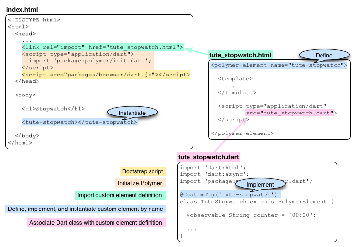
安装 Polymer.dart
你需要先安装 Polymer 包才可以使用 Polymer.dart 提供的功能。 如果你还不知道如何安装包，请 参考 安装共享包 一章。
简单来说，安装 Polymer 包过程如下：
-
在应用的
pubspec.yaml文件中添加 一个依赖项， 该依赖项的名字为polymer包名。 YAML 格式对空格是敏感的， 所以要注意空格的缩进：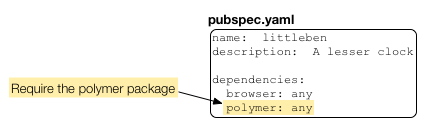
-
运行
pub install命令， 该命令会递归的 安装 polymer.dart 包和其 依赖的所有包。 如果你使用 Dart 编辑器， 当你保存 pubspec.yaml 文件的时候 编辑器会自动运行pub install命令。 如果你用命令行工具， 你可以通过命令行运行pub install命令。
在项目中使用 Polymer.dart
要使用 Polymer.dart 的功能，例如 自定义元素， 需要在 HTML 和 Dart 代码中都 引入 Polymer 库。
-
在你应用的主要 HTML 代码的 <head> 区域， 使用 <script> 标签 导入
package:polymer/init.dart。 该脚本中包含了用于初始化 Polymer 的main()函数。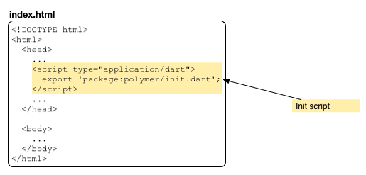
-
在你应用的主要 HTML 代码的 <head> 区域， 引入 Dart 引导脚本
packages/browser/dart.js。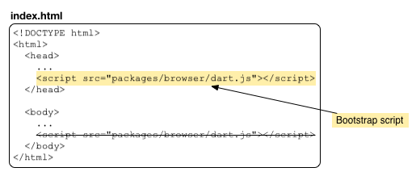
-
在 Dart 代码中导入 Polymer 库：
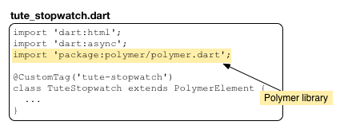
初始化一个 custom element
和使用普通的 HTML 标签一样使用自定义元素的名字
来初始化一个自定义元素。
在该示例中，自定义元素的名字为 tute-stopwatch。
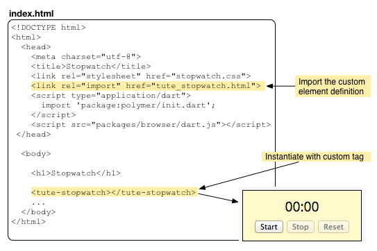
把自定义元素定义在一个单独的文件中
是最佳方式。
然后用 link [rel="import"] 来导入 HTML 定义文件。
定义一个 custom element
在 tute_stopwatch.html 文件中定义了 <tute-stopwatch> 元素。 自定义元素应该定义在自己的文件中， 这样可以被其他文件引用。 定义自定义元素的 HTML 文件不需要 <html>、 <head>、 和 <body> 标签。
用 <polymer-element> 标签来定义 一个自定义元素，并设置一个名字。
<polymer-element name="tute-stopwatch"> ... </polymer-element>
自定义元素的名字至少必须包含一个连字符 (-)。
我们建议用一个可区分的前缀来避免
名字冲突。
一般该前缀代表该元素的来源，
例如在该示例中的自定义元素，我们用
tute（tutorial 的前几个字符） 作为前缀。
在 <polymer-element> 标签中， 可以有模板和脚本分别控制元素的外观和行为。 在 Stopwatch 示例中的 UI 控件中， 同时包含模板和脚本代码，但是他们都不是 必要的。 一个只有脚本而没有模板的自定义元素只是提供了单纯的函数功能。 一个只有模板而没有脚本的自定义元素只是提供了单纯的显示功能。
<polymer-element name="tute-stopwatch">
<template>
...
</template>
<script type="application/dart" src="tute_stopwatch.dart">
</script>
</polymer-element>
- <template>
- 定义了自定义元素的用户界面。 模板有在 <template> 标签内合法的 HTML 代码组成。 当自定义元素初始化后， 实例从模板中创建。 模板还可以在 <style> 标签中包含 CSS 样式。
- <script>
-
指定 Dart 脚本。 对于自定义元素来说，Dart 脚本就是实现了 自定义元素行为的 Dart 类。 该类通常重载了一些 生命周期函数并提供了 一些事件监听器实现 来 联合 UI 和行为。 在该示例中，脚本位于 tute_stopwatch.dart 文件中。
为 custom element 提供一个模板
下面是 tute-stopwatch 元素的模板：
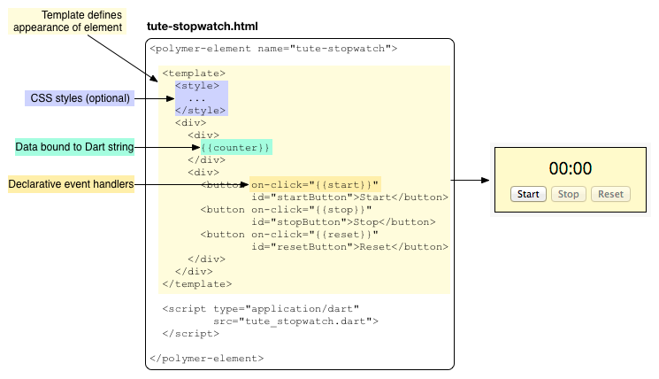
tute-stopwatch 模板用了一个可选的 <style> 标签。 该样式是局部的，只影响该 自定义元素中的元素。 在 custom element 上应用样式 中介绍了局部样式的更多信息。
在 <template> 中的其他代码除了下面两个以外 都是普通的 HTML 标签：
{{counter}} |
用 Polymer 语法来 绑定 Dart 数据 到 HTML 页面中，双大括号通常被称为 “double mustache”。 |
on-click |
使用 Polymer 的声明式事件映射 来设置 UI 元素的事件处理函数。on-click 设置了一个鼠标点击的事件处理函数。Polymer 还有其他的事件映射类型，例如 on-input 用于文本内容改变事件。 |
在进入数据绑定、事件处理和局部 CSS 之前 我们先看看 Dart 代码的基本结构。
为 custom element 提供一个脚本
在 Dart 代码中，一个类实现了自定义元素的行为。
使用 @CustomTag 注解来关联
自定义元素和 Dart 类。

下图概览了 TuteStopwatch 类：
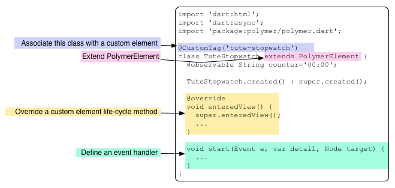
任何自定义 Polymer 元素的 Dart 类都必须是 PolymerElement 的子类。
通过重载 生命周期函数
该类可以响应生命周期中的事件。
例如，在 TuteStopwatch 类中重载了 enteredView() 函数 – 该函数在
元素插入到 DOM 中调用 – 来初始化应用。
start() 函数是 Start 按钮的事件处理函数。
事件处理函数通过声明式和按钮关联。
参考 用声明式方法来设置事件监听器 了解更多。
重载生命周期函数
一个自定义元素有四个生命周期函数可以被 重载：
created() |
当一个自定义元素实例被创建的时候调用 |
enteredView() |
当一个自定义元素的实例插入到 DOM 中时调用。 |
leftView() |
当一个自定义元素的实例从 DOM 中删除时调用。 |
attributeChanged() |
当一个自定义元素的属性改变的时候调用，例如 添加、修改或者删除一个 class。 |
你可以重载以上任何函数。 重载函数必须先调用 父类函数。
由于需要三个按钮的引用来启用或者禁用他们，
所以 Stopwatch 应用
重载了 enteredView() 函数，
当一个 tute-stopwatch 自定义元素插入到
DOM 中时，这些按钮就会被创建，然后当 enteredView() 被调用的时候
这些按钮的引用就可用了。
void enteredView() {
super.enteredView();
startButton = $['startButton'];
stopButton = $['stopButton'];
resetButton = $['resetButton'];
stopButton.disabled = true;
resetButton.disabled = true;
}
上面的代码使用了 Polymer 提供的 _节点自动查找技术_来获取
每个按钮的引用。
一个自定义元素中的每个节点都有一个 id 属性，
可以用 $['ID'] 语法来引用该元素。
使用数据绑定
在自定义元素的 HTML 定义中，
使用双大括号在 网页代码中嵌入 Dart 代码。
在 Dart 代码中，使用 @observable 注解来标记
嵌入的数据。
下面的数据字符串为 counter。
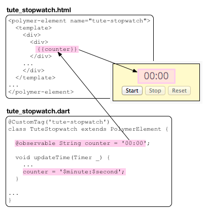
tute-stopwatch 元素用一个定期的
Timer
每隔一秒触发一个事件。
当 Timer 触发的时候调用 updateTimer() 函数，
该函数然后修改 counter 字符串。
Polymer 负责用新的字符串更新 HTML 页面内容。
由于上面的数据只能在 Dart 代码中改变， 所以这种数据绑定被称之为 单向数据绑定。 Polymer 还支持双向数据绑定。 在双向数据绑定中，当 HTML 中的数据改变的时候 Dart 代码中的值也会随之改变，例如 输入框总的值发生了变化。 关于双向数据绑定的更多信息以及如何使用各种 HTML5 控件，请查看表单教程中的 Polymer 的 双向数据绑定 一节。
在双大括号中还可以用表达式。 Polymer 表达式 提供了默认的语法。支持的表达式如下：
{{myObject.aProperty}} |
访问对象的属性。 |
{{!empty}} |
操作符，例如逻辑非操作符。 |
{{myList[3]}} |
List 索引。 |
{{myFilter()}} |
数据过滤。 |
用声明式方法来设置事件监听器
该示例有三个按钮，每个都带有一个 Dart 代码的事件处理函数，这些函数 通过在 HTML 中声明的方式添加到按钮中的。

在 HTML 代码中，用 on-click 属性来关联
一个 HTML 元素的鼠标点击事件处理函数。
该属性的值必须为实现该自定义元素类中的
一个函数名字。
当用户点击按钮的时候，使用如下三个参数调用
指定的函数：
你也可以关联其他类型的事件处理函数(事件监听器)。
例如，可以用 on-input 来关联输入框的文本
改变事件。
参考 声明式事件映射 了解更多信息。
在 custom element 上应用样式
你可以选择为自定义元素定义 CSS 样式， 该样式仅仅用于该自定义元素。
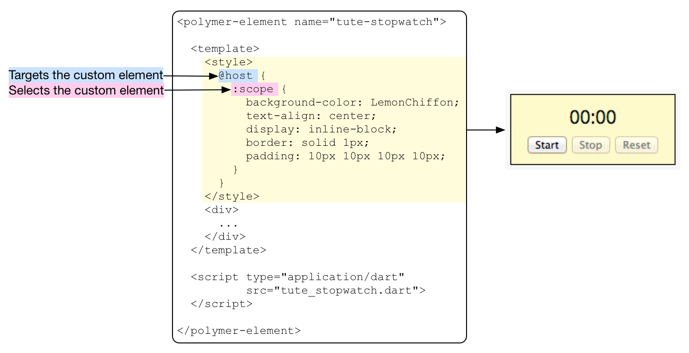
@host 规则让你可以指定自定义元素中的
一个内部元素。
而 :scope 伪类代表自定义元素自己。
@host 内的选择器只在自定义元素
内起作用。
所以你不用和网页中的其他元素担心命名冲突问题。
自定义元素内的 CSS 选择器只要在元素内唯一即可。
关于自定义元素 CSS 样式的更多信息 请参考 自定义元素样式指南
其他资源
如下资源可以了解 Polymer 的更多信息：
-
在 Polymer.dart 主页中提供了 Dart 移植 的 Polymer 项目的更多信息。
-
Polymer 项目网站 polymer-project.org 中包含了关于 Polymer 项目的所有信息。
接下来干啥？
Polymer 中的双向数据绑定 介绍 了如何使用各种控件上的双向数据绑定，例如 文本控件、颜色 选择控件 等等。
参考下面几个使用 Polymer 的示例项目：
- its_all_about_you
- slambook
- count_down
下一个教程中， 动态获取数据将 告诉你如何获取数据并处理 JSON 格式的 数据。